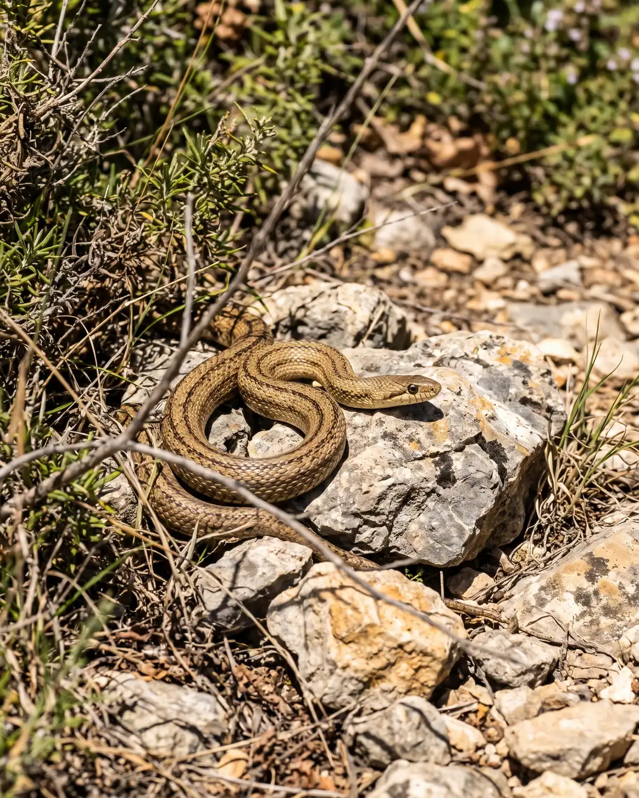
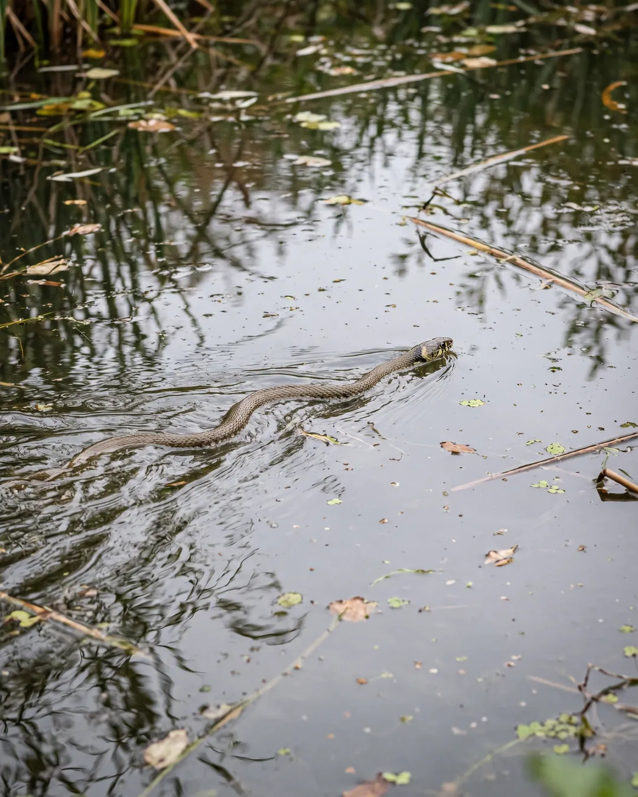
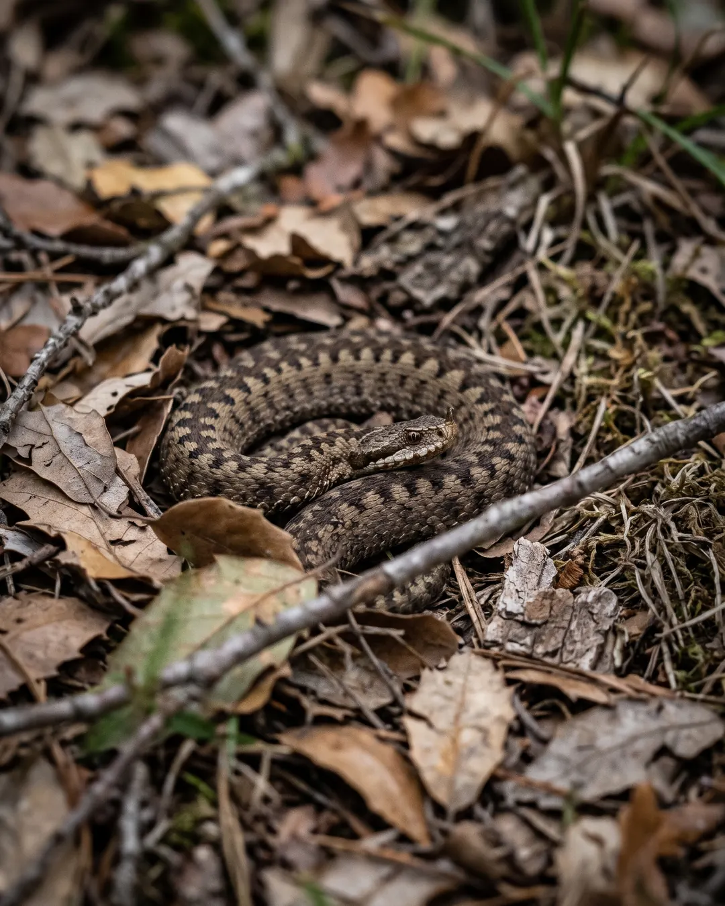

Caso n.º 19 · Serpientes
Sobre este caso
El caso n.º 19 está cerrado. Fue el caso diario del 19 de noviembre de 2026 y su tema fue Serpientes. Los detectives de aquel día tuvieron dos retos: cinco imágenes que clasificar en fotografías reales y generadas por IA, y cinco afirmaciones de una frase que clasificar en datos y bulos.
- Imágenes generadas por IA: 4 de 5
- Bulos: 2 de 5
Aquí tienes todas las respuestas. Cada imagen generada por IA trae el prompt que la creó, y cada afirmación, la verdad que hay detrás y los detalles que merece la pena recordar, para que compruebes qué se te escapó.
Uno de los bulos: «Existen serpientes capaces de realizar la fotosíntesis si no encuentran alimento.» La verdad: Ninguna serpiente ni otro reptil puede hacer la fotosíntesis; las serpientes son estrictamente carnívoras y dependen de la caza.
¿Quieres afinar la vista? Lee nuestra guía para detectar imágenes de IA o nuestra guía para detectar un bulo y luego juega el caso de hoy.
Imágenes
-
Imagen 1

IA
La confesión del sospechoso
Una culebra de escalera tomando el sol sobre unas piedras en un camino de monte mediterráneo, fotografiada con teleobjetivo de 300 mm; escamas con detalle, parte del cuerpo oculta entre matorrales secos y luz dura de mediodía.
-
Imagen 2

IA
La confesión del sospechoso
Una culebra de agua nadando en la superficie de un estanque con la cabeza fuera, dejando una pequeña estela; reflejos de la vegetación de la orilla en el agua y colores apagados de mañana nublada.
-
Imagen 3

IA
La confesión del sospechoso
Una víbora hocicuda enroscada entre hojarasca y ramitas en el suelo de un bosque, casi camuflada con el entorno; enfoque en la cabeza, el resto del cuerpo algo desenfocado y luz tenue filtrada por los árboles.
-
Imagen 4

REAL
Fotografía real
-
Imagen 5

IA
La confesión del sospechoso
Una serpiente de tamaño medio cruzando un camino de tierra seca, captada en movimiento con el cuerpo en curva y un ligero desenfoque en la cola; sombra marcada de luz de tarde y piedrecitas en primer plano.
¿Dato o Bulo?
-
Afirmación 1
BULO «Existen serpientes capaces de realizar la fotosíntesis si no encuentran alimento.»
Ninguna serpiente ni otro reptil puede hacer la fotosíntesis; las serpientes son estrictamente carnívoras y dependen de la caza.
- Algunas babosas de mar, como la Elysia chlorotica, asimilan cloroplastos.
-
Afirmación 2
DATO «El corazón de las pitones varía de tamaño y posición cuando ingieren grandes presas.»
Tras una gran comida, el músculo del corazón de una pitón de Birmania puede crecer hasta un 40 % en unas 48 horas.
- Ese mayor bombeo acelera la digestión.
- Su corazón no está anclado con rigidez y se desplaza en la caja torácica.
-
Afirmación 3
DATO «Existen serpientes que pueden planear hasta 100 m abriendo sus costillas.»
Las serpientes voladoras del género Chrysopelea, del sudeste asiático, planean de árbol en árbol aplanando su cuerpo.
- Abren las costillas en una forma cóncava, como un paracaídas.
- Se lanzan desde las ramas y se dirigen con gran control.
-
Afirmación 4
DATO «Una de las serpientes más grandes que se conocen es una especie extinta.»
La Titanoboa cerrejonensis vivió hace unos 60 millones de años en lo que hoy es Colombia y alcanzó unos 13 m.
- Podía superar los 1.000 kg de peso.
- Era mucho más grande que cualquier anaconda o pitón actual.
-
Afirmación 5
BULO «Existen serpientes que se comunican entre sí mediante ondas sísmicas provocadas por su cola.»
Las serpientes notan las vibraciones del suelo con la mandíbula inferior, pero no envían señales sísmicas con la cola.
- El cascabel de una serpiente es una advertencia acústica que viaja por el aire.